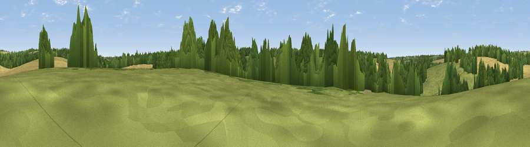

Hyde Hill
#45279 in England · top 94% of its area beats it · near AsheWhere it is
The exact computed spot (SU 53691 49958). Click the marker for map links.
The view, rendered

A 360° render of this exact spot computed from the terrain model, tree cover and land cover — summer colours, afternoon light, calibrated against photographs of famous viewpoints. Real trees, hedges and buildings will differ in detail.
The panorama
Grey silhouette: terrain skyline in each direction (720 bearings, Earth curvature and refraction included). Dashed green: skyline with trees (+15 m) and buildings (+8 m) as obstacles. Blue strip: how far the ground is visible on each bearing.
Where the view opens
Wedge length = distance to the farthest visible ground on that bearing (vegetation-aware). Rings at 10, 25 and 50 km.
What fills the view
50% grassland · 29% cropland · 19% woodland · 2% built-up
Angular shares of the visible panorama (visual magnitude), not map area. Landscape diversity 0.47 (0–1 Shannon).
Key numbers
More beautiful places nearby
The staircase of upgrades: each row has a higher view potential than everything closer. Driving times are estimates from straight-line distance, calibrated against real road routing — check an actual route before setting out.
| Place | Direction | Drive | Score |
|---|---|---|---|
| Viewpoint near Deane | SE · 2 km | ~5 min | 25.6 |
| Viewpoint near Deane | NNE · 2 km | ~5 min | 38.4 |
| Viewpoint near Hannington | N · 4 km | ~9 min | 43.5 |
| Cocksford Down | S · 6 km | ~13 min | 47.0 |
| Cottington's Hill | N · 7 km | ~14 min | 65.6 |
| Watership Down | NNW · 8 km | ~16 min | 71.4 |
| Beacon Hill | NW · 11 km | ~20 min | 76.7 |
| Viewpoint near Buriton | SSE · 35 km | ~53 min | 80.0 |
51.24628, -1.23216 · source: osm peak · position refined by local search. Computed location — check access rights before visiting.